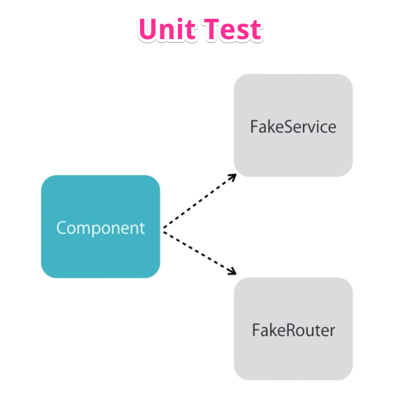
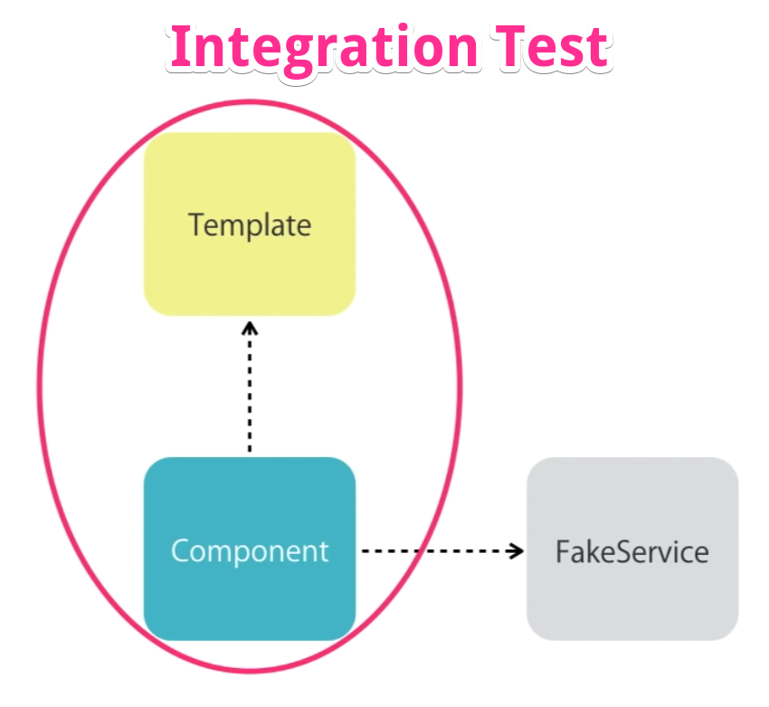

2. Different types of tests
In Angular context, there are the following types of tests:
2.1. Unit Test
Testing a function in isolation, focusing on small isolated pieces of code:
- Test an individual component in isolation, without external resources
- In Angular terms, test only the component class file with fake services and routers
- Coverage: Small unit/chunk of code
- Complexity: Easier to write
- Time/Duration: Super fast, takes less time
- Frequency: Write many unit tests (hundreds)
- Functionality Testing Confidence: Does not thoroughly test application functionality
Unit Testing

Image - Unit Testing
2.2. Integration Test
Testing a component with interactions involving templates and dependencies:
- In Angular terms, test a component along with its template, using fake services and routers
- Coverage: Test a component with external resources
- Complexity: Moderate complexity due to dependency injection
- Time/Duration: Takes more time compared to unit tests
- Frequency: Write several integration tests (tens)
- Functionality Testing Confidence: Provides good confidence about functionality
Integration Testing

Image - Integration Testing
2.3. End-to-End Test (Functional Testing)
Testing the entire application as a whole, including user interactions and service API calls:
- Coverage: Tests the entire application functionality
- Complexity: Most complex type of testing
- Time/Duration: Very time consuming, tests are slow
- Frequency: Write a few end-to-end tests (1 or 2)
- Functionality Testing Confidence: Fragile and prone to breakage with changes in templates or components
2.4. The testing pyramid
The testing pyramid suggests:
- 75-80% of tests should be unit tests
- 15-20% should be integration tests
- 5% should be end-to-end UI tests
- Overall percentages vary based on company and project requirements
Note: Focus on writing more unit and integration tests, and fewer end-to-end tests for key functionalities.